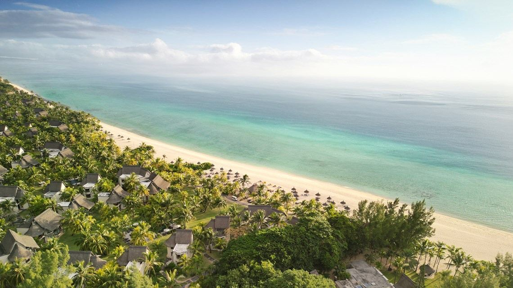
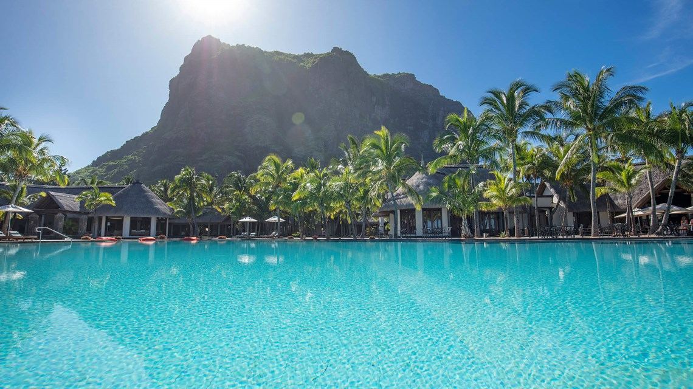
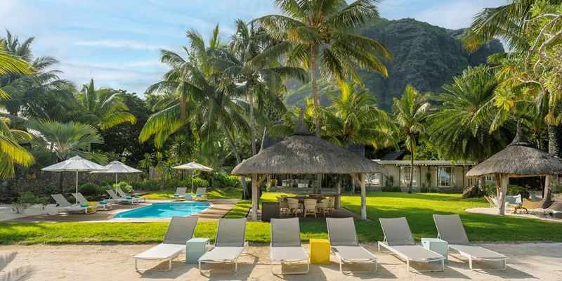

Junior Suites
Сьюты с террасой или балконом, видом на сад или океан и удобным доступом к пляжу.
Dinarobin Beachcomber Golf Resort & Spa расположен у подножия горы Ле-Морн и подходит для спокойного пляжного отдыха, SPA, гольфа и красивых видов на океан.
Отель работает для пар и семей, которым нужен элегантный, не слишком шумный курорт с большой территорией, пляжем и доступом к инфраструктуре полуострова.
Le Morne Peninsula
по запросу
автомобиль от аэропорта
сьюты и виллы
Описание категорий приведено как ориентир для подбора. Точные площади, вид и комплектацию лучше сверять под даты поездки.
Сьюты с террасой или балконом, видом на сад или океан и удобным доступом к пляжу.
Более просторные категории для гостей, которым нужна отдельная зона отдыха и больше приватности.
Крупные категории для семей и приватных поездок, с несколькими спальнями и большим пространством.



Рестораны предлагают международную, маврикийскую и средиземноморскую кухню, бары и ужины у океана.
Пляж у Ле-Морн с мягким песком, лагуной и видом на гору. Побережье удобно для спокойного отдыха и прогулок.
SPA, массажи, уходы, хаммам/сауна по инфраструктуре отеля и восстановительные программы.
Гольф, фитнес, теннис, водные виды спорта, кайтсерфинг в районе Ле-Морн, прогулки и экскурсии.
Подходит семьям: есть пространство, пляж, спокойный ритм и семейные категории размещения.
Для пар и семей, которым нужен спокойный Deluxe-курорт с природной рамкой Ле-Морн, пляжем, SPA и гольфом.